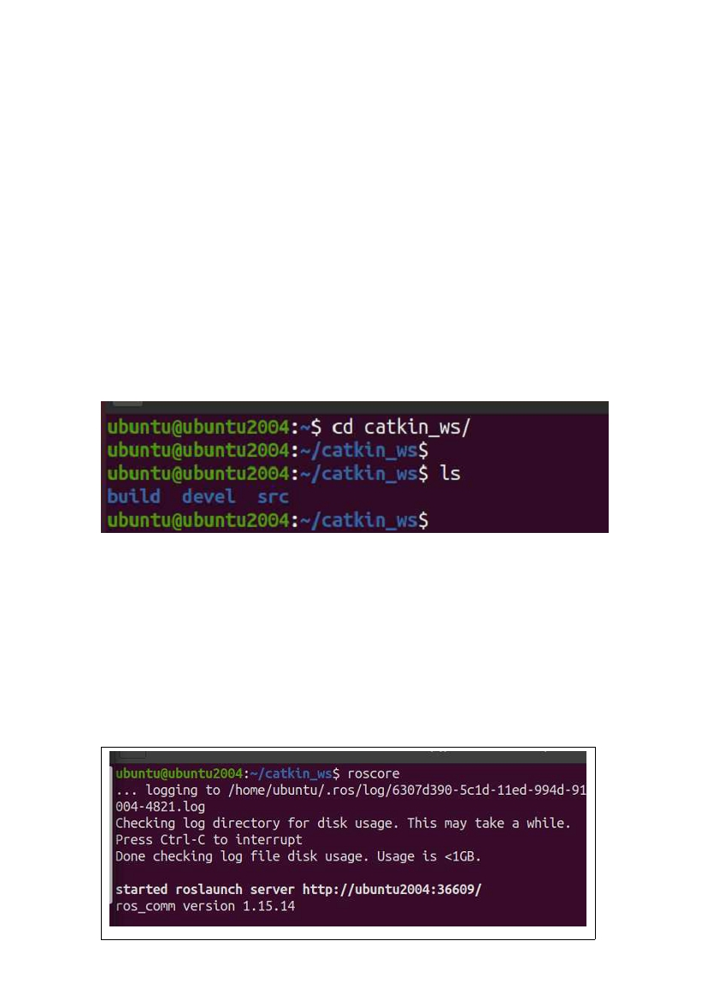
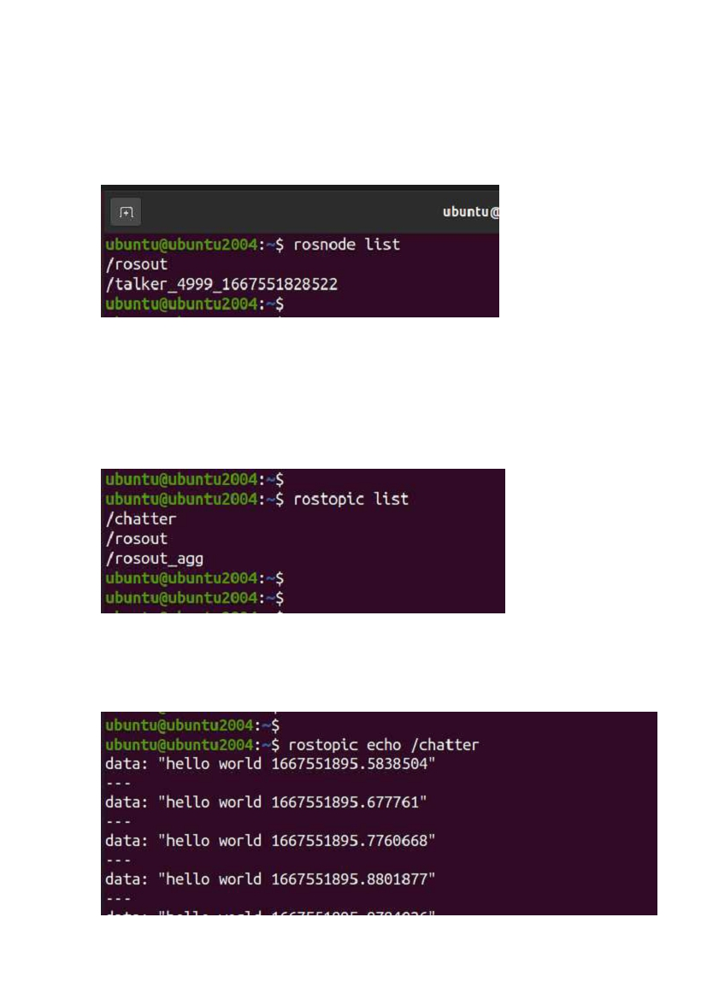
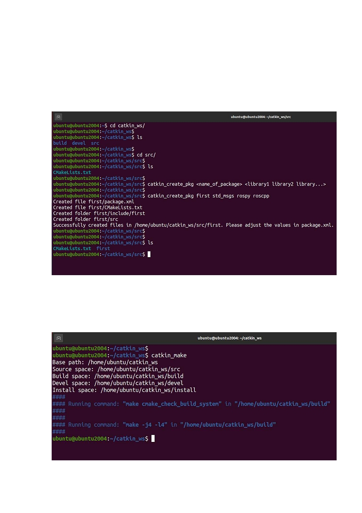
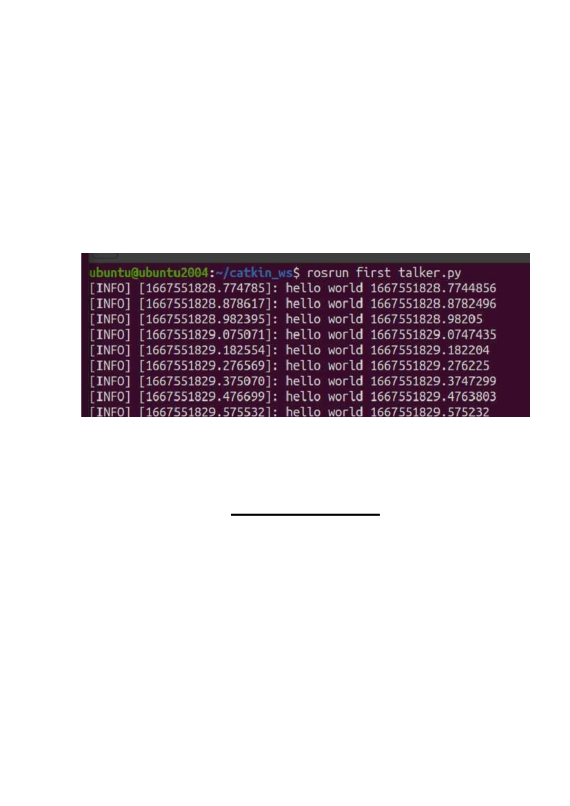
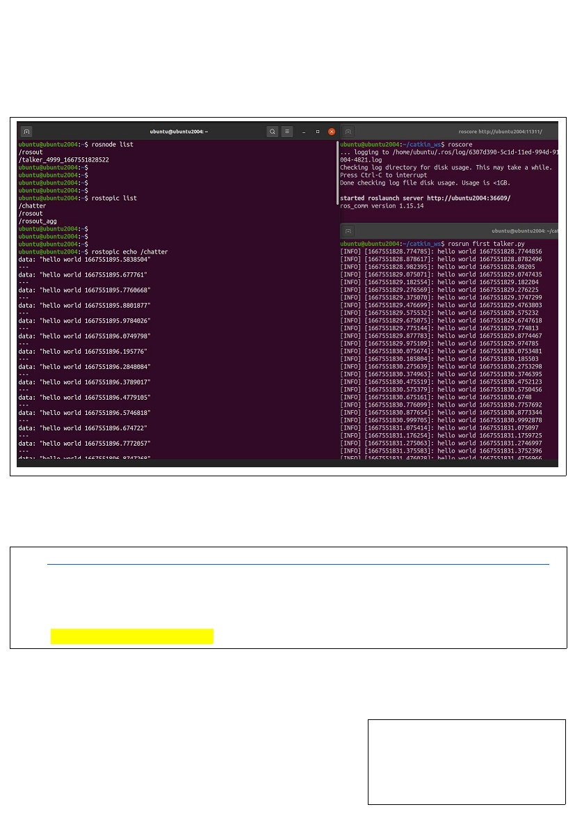

R O S
( ROBOT OPERATING SYSTEM )
It's a framework ( set of software libraries and tools ) that help you build robot
applications.
Work Space:
This is where we make our projects ( packages ). It has 3 directories (folders).
build, devel and src ( packages will store under src ).
ROS Core:
roscore is a collection of nodes and programs that are pre-requisites of a ROS-
based system. You must have a roscore running in order for ROS nodes to
communicate. It is launched using the roscore command.

Nodes:
A node represents one process running the ROS graph. Every node has a name,
which it registers with the ROS master before it can take any other actions.
Topics:
Some nodes provide information for other nodes, as a camera feed would do, for
example. Such a node is said to publish information that can be received by
other nodes. The information in ROS is called a topic.
Here, /chatter is a topic. To see what’s happening inside the topic, execute:
rostopic echo ‘name_of_the_topic’

Create Package:
1. Go to Work Space ( cd ~/catkin_ws )
2. Go to src ( cd src)
3. Create package ( catkin_create_pkg <name> <libraries> )
4. Go to Work Space
5. Build the packages ( catkin_make )

Note:
1. Under workspace > src the package will be created
2. Inside the package there should be 2 folders, src ( will contain c++ codes ) and
scripts ( create it if it doesn't exist. It will contain python codes )
ROS RUN:
To run a package execute: rosrun <name_of_package> <name_of_codeFile>
ROS at a Glance
1. You need a workspace to make projects ( page: 1 )
2. Create package under src. ( page: 4 )
3. Put your c++ code under package > src and
python code under package > scripts.
4. Go to workspace and build the package. ( page: 4 )
5. Open ROS Core by executing: roscore.
6. Run a package by executing: rosrun <packageName> <codeFile>
7. List all nodes by executing: rosnode list.
8. List all topics by executing: rostopic list.

9. See what’s happening inside a topic by executing: rostopic echo <topic>
Installation: ( On Ubuntu 20.04 )
wget https://raw.githubusercontent.com/skbtemp12/MavenWork/main/ros_noetic_install_v0.1.sh
chmod +x ros_noetic_install_v0.1.sh
./ros_noetic_install_v0.1.sh
Note: Don’t run the script with sudo
Prepared by,
Sheikh Shakib Hossain
ID: 011 221 031